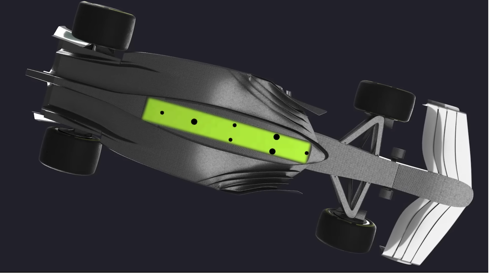
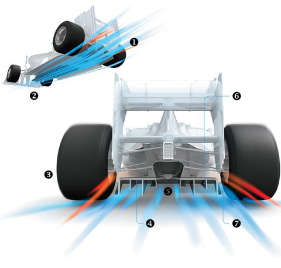

Porpoising is an aerodynamic phenomenon caused by the 2022 F1 car design, which intended to create more downforce and has created a side effect known as porpoising. It has been seen affecting many drivers and cars, causing discomfort for drivers.
Fernando Alonso experiences porpoising at the British Grand Prix 2022 (Fernando Alonso Onboard Extreme Porpoising - F1 British Grand Prix 2022, 2022)
How did porpoising begin? Well, in the aftermath of a car,
there is turbulent, "dirty" air.
This contaminated air makes it challenging for a motorist in
pursuit to come close, maintain speed, and pass the leading
vehicle. The 2022 car design regulations implemented several
structural modifications to encourage closer racing and more
precise passing.
Some structural changes included a wider front wing, over-wheel winglets and tunnels underneath the chassis floor. This brought the unexpected side effect of porpoising. Porpoising occurs when a car's downforce draws it so close to the ground at high speeds that it obstructs airflow and causes an abrupt loss of downforce. As this cycle repeats, the suspension pulls the car back up, causing it to bounce.
After several driver complaints regarding porpoising, the World Motorsport Council (FIA) has decided to take action. The organisation first implemented a technical directive, specifically directive TD039, which allows the FIA to monitor vertical oscillations and place limits on the levels of these oscillations, (technical directives are a form of rules that are typically discussed mainly among teams), which is the amount of times the car bounces. From the Belgian Grand Prix, the FIA will keep vertical oscillations of cars underneath a microscope and take action against any vehicles considered to be 'extreme'. However, they haven't exactly specified yet what 'extreme' or acceptable levels of vertical oscillations are.
Strengthening an existing technical regulation is one of the essential components of this technical directive. Each Formula 1 car has a hardwood plank installed on the floor of the cars, and that plank's flexibility is strictly controlled. There was a rumour that numerous teams had been experimenting this plank's flexibility by deviating from the permitted 2mm deflection. Throughout the season, the FIA will continue to look into this speculation.
Plank based on floor of F1 Cars (FORMULA 1, 2022a)
One of the significant changes in next year's technical regulations is regarding the Formula 1 car's floor edges, which are being raised by 25mm. This visibly minor change could affect a lot of things next season. Raising the floor edges is a significant disadvantage. Every team tries to run the car as close to the ground because it generates more downforce, thus holding an aerodynamic advantage. However, the FIA has not yet approved this rule modification, so it is possible that it will alter.
There are some other significant changes based on the floor of the car, in the throat of the diffuser, where the air is driven in to create downforce. The FIA are making that shape slightly larger and raising it. This change makes the diffuser less effective and reduces the overall downforce, making the car slower but reducing porpoising in theory.
F1 Car Diffusers (Car and Driver, 2013)
On top of all that, the FIA will have a covert operative in the cockpit the following year. Under the driver's seat, the current vertical acceleration sensor will be swapped out for a new, more precise sensor. The new sensor will assist the FIA in better monitoring vertical accelerations and defining what is and is not allowed.
So, how will these new regulations affect teams? Mercedes, a team with experienced
porpoising in full effect, will presumably find these new FIA rules advantageous.
However, what of a team who hasn't experienced much porpoising? These new rules,
however, seem more in favour of Mercedes, who have been vocal in anticipation of
the FIA enacting regulations to conceivably level the playing field concerning the
vehicles' porpoising on straights. Guenther Steiner, the team principal of Haas F1
Team, stated You change something fundamentally, and it could change the pecking
order completely. Is that really fair?
. Steiner holds a point; not every team
experienced much porpoising, and some developed their car to eliminate it.

Max Verstappen driving the Oracle Red Bull Racing RB18 during Day Three of F1 Testing at Bahrain (FORMULA 1, 2022b)
Maybe the FIA needs to let the teams handle porpoising on their own? Take Red Bull, a team who has experienced very little porpoising has dealt with this loss in downforce by engineering a new rear suspension that can adjust to the environment once the vehicle reaches 250 kph. The ground effect, which is caused by air rushing through a small breach in the lowest part of the tunnel to fill the higher-pressure lower area behind, is stronger as the car's speed increases as it is drawn closer to the ground. The airflow's speed and, thus, the amount of downforce, rise dramatically as the gap shrinks to its final few millimetres. So, thanks to their engineers, a team with no porpoising issues are now forced to change their car design, resulting in slower cars. The FIA needs to let the teams try to solve it for themselves.
It would seem unfair to penalise the ones that have done a decent job, versus the ones that have perhaps missed the target slightly
- Christian Horner, Red Bull Racing Team Principal
Red Bull F1 Car Underfloor (FORMULA 1, 2022c)
With all these regulations and speculations, it seems that all we can do for now, as an enjoyer of F1, is sit back and see how it all unfolds. However, one thing is certain: these new regulations will change Formula 1 and how racing competes.
| Pos. | Driver | Team | Constructor Pos. | Points | Wins | Podiums |
|---|---|---|---|---|---|---|
| 1 | M. Verstappen | Red Bull | 1 | 258 | 8 | 10 |
| 2 | C. Leclerc | Ferrari | 2 | 178 | 3 | 5 |
| 3 | S. Perez | Red Bull | 1 | 173 | 1 | 6 |
| 4 | G. Russell | Mercedes | 3 | 158 | 0 | 5 |
| 5 | C. Sainz Jr. | Ferrari | 2 | 156 | 1 | 6 |
| 6 | L. Hamilton | Mercedes | 3 | 146 | 0 | 6 |
| 7 | L. Norris | McLaren | 5 | 173 | 0 | 1 |
| 8 | E. Ocon | Alpine | 4 | 58 | 0 | 0 |
| 9 | V. Bottas | Alfa Romeo | 6 | 46 | 0 | 0 |
| 10 | F. Alonso | Alpine | 4 | 41 | 0 | 0 |
Click on the drivers or teams to see their wiki page.